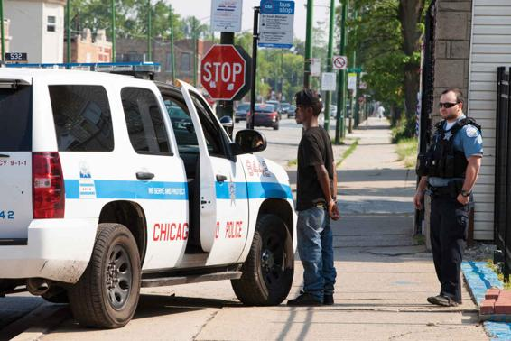

One widely used qualitative method is ethnography, or firsthand studies of people using observations, interviews, or both. Here, the investigator socializes, works, or lives with members of a group, organization, or community. In the case of participant observation, the researcher participates directly in the activities he or she is studying. Other ethnographers, by contrast, may observe at a distance and not participate directly in the activities under observation. An ethnographer cannot simply be present in the group she studies but must explain and justify her presence to its members. The researcher must gain and sustain the cooperation of the community to achieve worthwhile results.
Table 2.1THREE OF THE MAIN METHODS USED IN SOCIOLOGICAL RESEARCH
RESEARCH METHOD
STRENGTHS
LIMITATIONS
Ethnography
Usually generates richer and more in-depth information than other methods.
Can provide a broader understanding of social processes.
Can be used to study only relatively small groups or communities
Findings might apply only to groups or communities studied; not easy to generalize on the basis of a single fieldwork study.
Surveys
Make possible the efficient collection of data on large numbers of individuals.
Allow for precise comparisons to be made among the answers of respondents.
Material gathered may be superficial; if questionnaire is highly standardized, important differences among respondents’ viewpoints may be glossed over.
Responses may be what people profess to believe rather than what they actually believe.
Experiments
Influence of specific variables can be controlled by the investigator.
Are usually easier for subsequent researchers to repeat.
Many aspects of social life cannot be brought into the laboratory.
Responses of those studied may be affected by the experimental situation.
For a long while, research based on participant observation excluded accounts of the hazards or problems involved, but more recently, fieldworkers have been more open. Frequently, fieldworkers experience feelings of loneliness and frustration, the latter occurring especially when group members refuse to talk frankly with them. Some types of fieldwork may be physically dangerous; for instance, a researcher studying a delinquent gang might be seen as a police informer or might become unwittingly embroiled in conflicts with rival gangs.
In traditional works of ethnography, accounts provided little information about the observer because ethnographers were expected to present objective reports. More recently, ethnographers have increasingly spoken about their connection to the people under study. For example, a researcher might discuss how her race, class, or gender affected the work, or how the power differences between observer and observed distorted the dialogue between them.
Advantages and Limitations of Fieldwork
Successful ethnography provides rich information on the behavior of people in groups, organizations, and communities, as well as information on how these people understand their own behavior. Once we look inside a given group, we can better understand not only that group but also broader social processes.
Sociologist Alice Goffman spent six years doing participant observation research for her study of the impact of intensive policing on young Black men.
But fieldwork has its limitations. Only fairly small groups or communities can be studied. Much also depends on the researcher’s skill in gaining the confidence of the individuals involved. Also, a researcher could identify so closely with the group that he loses the perspective of an objective outside observer. Or a researcher might draw conclusions that are more about his own effect on the situation than he or his readers realize. Interpreting ethnographies usually involves problems of generalizability because we cannot be sure that what we find in one context will apply in others, or even that two different researchers will draw the same conclusions when studying the same group.
A Recent Example of an Ethnography
When Alice Goffman was a graduate student, she spent six years in an intensely policed poor Black neighborhood. She was interested in the social situation of large numbers of Black men who were on the run from the criminal justice system. She became part of the everyday life of a group of boys who were known as the 6th Street Boys, writing about them in her book On the Run (Goffman, 2014). Goffman’s research cast new light on the struggles of men who were dipping and dodging the police and worrying that any encounter would result in their imprisonment. By spending time with them every day for many years, Goffman was able to see that for these men, activities, relations, and localities that others relied on to maintain a decent and respectable identity were transformed into a system that authorities used to locate, arrest, and confine them. The police and the courts became dangerous to interact with, as did showing up to work or going to places such as hospitals. Instead of a safe place to sleep, eat, and find acceptance and support, their childhood homes were transformed into a “last known address,” one of the first places police looked for them. Close relatives, friends, and neighbors became potential informants.